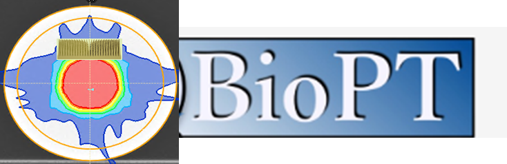
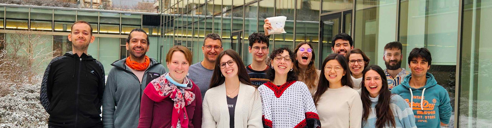

BioPT: Biophysics in Particle Therapy
Heidelberg Ion Beam Therapy Center (HIT) · Heidelberg, Germany

Welcome
BioPT is an interdisciplinary research group based at the Heidelberg Ion-Beam Therapy Center (HIT), working to advance ion beam therapy for cancer treatment. We collaborate with clinicians and researchers to develop biological models, simulation tools, and treatment planning approaches for particle therapy.
For more information about our group, please visit our official site:
klinikum.uni-heidelberg.de → Biophysik in der Partikeltherapie
Open Positions
FLASHVIVO Project Positions
FLASHVIVO is a collaborative research and development project focused on real-time, in-vivo PET verification and biological guidance for FLASH particle therapy. Within the project, BioPT contributes Monte Carlo modeling, activity prediction, data analysis and experimental validation workflows to help verify treatment delivery under ultra-high dose rate conditions.
More about FLASHVIVO: TeraPet press release
Postdoctoral Researcher in Medical Physics / Monte Carlo Simulation for In-Beam PET and FLASH Particle Therapy (m/f/d)
Starting 01.06.2026 at the Heidelberg Ion Beam Therapy Center.
Your Tasks
- Further develop the in-house Monte Carlo engine MonteRay for the prediction of PET-related activity distributions in particle therapy.
- Integrate FLUKA-based cross-section data and related models into the simulation and analysis pipeline.
- Design, implement, and document software modules for PET activity prediction and tissue-specific biological washout.
- Plan, support, and evaluate validation experiments with different phantom setups in close collaboration with project partners.
- Coordinate reference calculations, comparison with measurement data, and quality assurance of the developed prediction and validation workflows.
- Prepare scientific publications and present project results at national and international conferences.
Your Profile
- PhD in physics, medical physics, computer science, mathematics, engineering, or a related field.
- Experience in scientific software development; knowledge of C++, Python, or comparable programming languages is an advantage.
- Ability to familiarize yourself with existing C++-based scientific software and complex simulation workflows.
- Experience with numerical methods, simulation, data analysis, or scientific modeling is desirable.
- Independent and structured working style, very good English skills, and ability to work effectively in an interdisciplinary team.
Employment Conditions
- Full-time position, fixed-term for two years.
- Remuneration according to TV-L E13, 100%; the final salary level depends on relevant professional experience.
Contact: Prof. Dr. Andrea Mairani, andrea.mairani@med.uni-heidelberg.de
Student Research Assistant in Medical Physics / Monte Carlo Simulation and Experimental Support (m/f/d)
Starting 01.06.2026 at the Heidelberg Ion Beam Therapy Center.
Your Tasks
- Support Monte Carlo simulation and data analysis for PET-based treatment verification in particle therapy.
- Contribute to the generation, validation, and organization of simulation and measurement data.
- Assist in the implementation and application of data analysis methods for comparing predicted and measured PET signals.
- Support the preparation and execution of experimental studies with different phantom setups.
- Document workflows and results in a structured and reproducible manner.
Your Profile
- Ongoing university studies in physics, medical physics, computer science, mathematics, engineering, or a related field.
- Initial experience in programming, data analysis, or scientific computing; knowledge of Python, C++, MATLAB, Julia, or comparable tools is an advantage.
- Interest in learning to work with scientific software, simulation workflows, and data analysis pipelines.
- Careful, structured, and reliable working style.
- Good German or English skills and ability to work well in an interdisciplinary team.
Employment Conditions
- Student assistant position for the FLASHVIVO project period, initially limited to two years.
- Working time by agreement and within the maximum permitted scope for student and scientific assistants at Heidelberg University.
- Remuneration according to the applicable Heidelberg University rates for student and graduate assistants; the hourly rate depends on degree status.
Contact: Prof. Dr. Andrea Mairani, andrea.mairani@med.uni-heidelberg.de
Master's Thesis Positions
Master's Thesis: GPU-Accelerated Monte Carlo Dose Calculation
Fast and accurate Monte Carlo dose calculation is an important step toward adaptive particle therapy, including future workflows guided by in-room MRI. In this project, you will contribute to accelerating the in-house MonteRay dose engine on GPUs. The work can include profiling, identifying suitable parallelization strategies, implementing selected components for GPU execution, and testing the resulting speedup and accuracy. A particular focus is dose calculation in complex magnetic fields, where fast and flexible research software can open possibilities beyond current clinical tools.
Requirements
- Ongoing Master's studies in physics, medical physics, computer science, mathematics, engineering, or a related field.
- Experience with programming or scientific computing in any language; C++, Python, Julia, MATLAB, or comparable tools are all useful.
- Interest in learning to work with C++-based scientific software, Linux, Git, and CMake.
- First experience with CUDA, GPU computing, or parallel programming concepts is helpful but not mandatory.
- Good English skills and a careful, structured working style.
Posted: 27.04.2026
Contact: peter.lysakovski@uni-heidelberg.de
Master's Thesis: Mini-Beam Oxygen Ion Therapy in MonteRay
Mini-beam therapy uses spatially fractionated dose distributions to spare healthy tissue while maintaining strong tumor control. Oxygen ions are especially interesting for this approach because they combine sharp physical dose distributions with high biological effectiveness. In this project, you will help extend MonteRay for oxygen ion and mini-beam therapy studies. Possible tasks include integrating interaction data, setting up mini-beam geometries, running and analyzing simulations, and comparing results with experimental measurements where available.
Requirements
- Ongoing Master's studies in physics, medical physics, computer science, mathematics, engineering, or a related field.
- Experience with programming, data analysis, or scientific computing in any language.
- Interest in particle therapy, Monte Carlo simulation, treatment planning, or experimental validation.
- Willingness to learn to work with scientific software, Linux, Git, and CMake.
- Good English skills and a careful, structured working style.
Posted: 27.04.2026
Contact: peter.lysakovski@uni-heidelberg.de
General Inquiries
For general questions or if you're interested in joining the group, please contact:
Prof. Dr. Andrea Mairani, andrea.mairani@med.uni-heidelberg.de